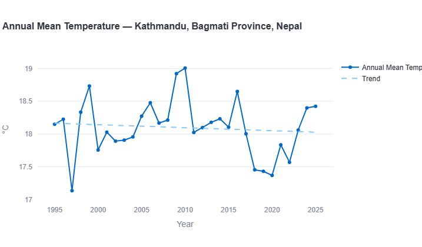
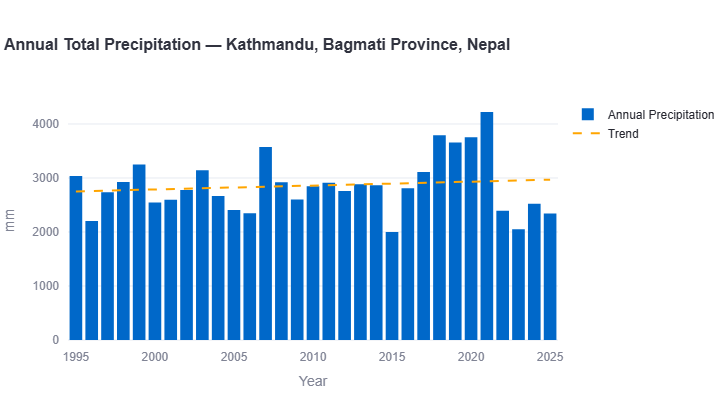
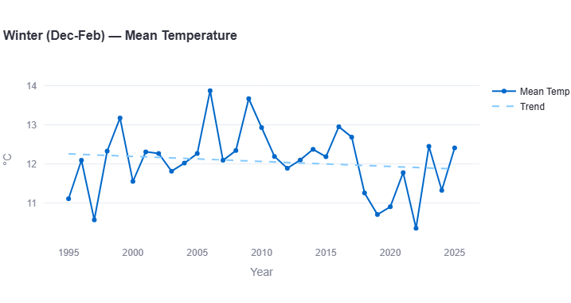
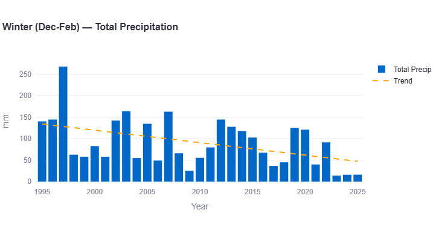
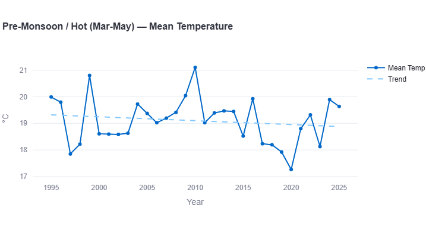
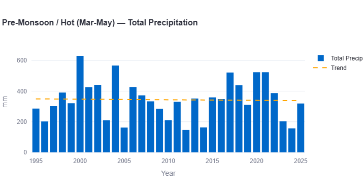
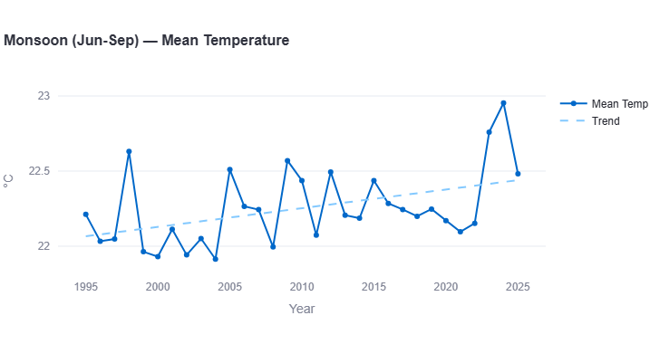
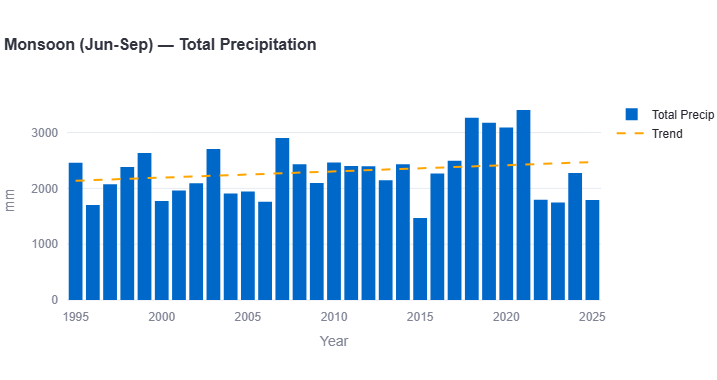
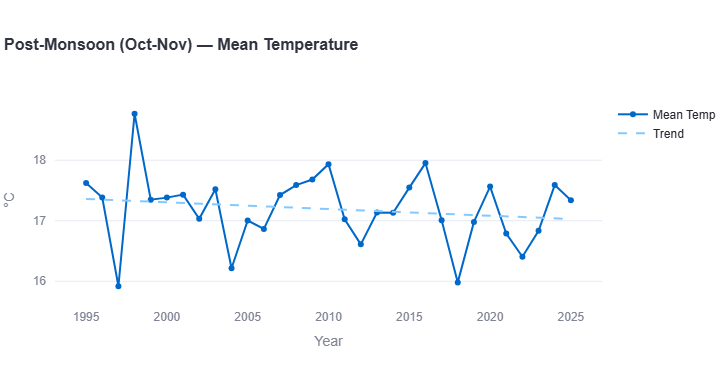
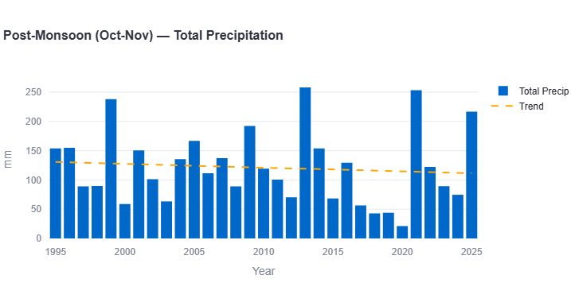

Kathmandu, Nepal's capital, sits in a high-altitude Himalayan valley — a fundamentally different setting from the coastal, delta, and continental-plain cities covered elsewhere in this series. And the 30-year data reveals something genuinely unexpected: unlike every other South Asian capital studied so far, Kathmandu shows almost no annual warming trend at all — and two of its four seasons are actually trending cooler.
This is a significant finding worth taking seriously rather than dismissing. Using the same methodology applied to Karachi and Dhaka, this report breaks down 30 years of historical reanalysis weather data (1995–2025) for Kathmandu, season by season, with a direct comparison to both cities.
All figures below come from ERA5/ERA5-Land reanalysis data (Copernicus/ECMWF), covering 1995 through 2025, visualized through our interactive Climate Trend Dashboard.
Annual Mean Temperature

Kathmandu's annual mean temperature record is volatile but strikingly directionless. The record's coldest year is 1997, dropping to just 17.15°C — a sharp outlier — while the warmest year, 2010, reaches 19.0°C. In between, the data oscillates without a clear long-term climb: a notably cool stretch appears from 2017–2021 (as low as 17.35°C), followed by a recovery back toward 18.4°C in the final two years.
Key Figure: Annual Warming Rate
This is a genuinely striking contrast to every other city in this series. Karachi warms at +0.13°C/decade, Dhaka at roughly +0.30°C/decade — Kathmandu, by comparison, shows no meaningful annual warming signal at all, and if anything, a very slight cooling lean. This doesn't mean Kathmandu is somehow immune to regional climate shifts; as the seasonal breakdown below shows, the picture is more complicated than a single flat annual number suggests.
Extreme Heat: Days Above 40°C

Across the entire 30-year record, Kathmandu shows zero days per year with maximum temperature reaching 40°C — unsurprising given its elevation (roughly 1,400m), which keeps it firmly out of range of the extreme heat seen in low-lying continental cities like Delhi.
Annual Total Precipitation

Annual rainfall in Kathmandu typically falls in the 2,000–3,200mm range for most of the record, with the trend line rising modestly from around 2,800mm in the mid-1990s to roughly 2,950mm by 2025. A notably wet cluster of years stands out from 2017–2021, including an extraordinary spike to nearly 4,200mm around 2021 — by far the highest annual total in the entire record.
Key Figure: Precipitation Trend
A modest upward trend, well below Karachi's steep +88.7mm/decade increase but moving in the same general direction — more rain overall, concentrated disproportionately in a handful of extreme recent years rather than spread evenly across the record.
Seasonal Trend Breakdown
The annual figures hide a genuinely important story: Kathmandu's seasons are not moving in the same direction. Breaking the data down — Winter (December–February), Pre-Monsoon/Hot (March–May), Monsoon (June–September), and Post-Monsoon (October–November) — reveals a mixed, even divergent, seasonal picture.
Winter (Dec-Feb)


Winter temperatures show a genuine decline — from a trend-line baseline near 12.3°C in the mid-1990s down to roughly 11.9°C by 2025. A particularly cold cluster appears from 2018–2022, with 2022 recording the coldest winter in the entire record at just 10.4°C, well below the mid-1990s baseline.
Key Figures: Winter
Warming rate: approximately −0.13°C per decade (cooling)
Precipitation trend: approximately −30mm per decade (declining)
This is a real cooling trend, not just statistical noise around zero — and it's paired with a substantial decline in winter rainfall, from a trend-line baseline near 140mm in the mid-1990s down to roughly 50mm by 2025. Kathmandu's winters, in other words, appear to be growing both colder and drier over this 30-year window — a combination worth watching closely given its implications for regional water availability heading into the dry season.
Pre-Monsoon / Hot (Mar-May)


Pre-monsoon temperatures also show a cooling trend, sliding from around 19.3°C in the mid-1990s to roughly 18.9°C by 2025. The record's most extreme point is 2020, dropping to just 17.3°C — the coldest pre-monsoon season on record — while 2010 stands out as the warmest, reaching 21.1°C.
Key Figures: Pre-Monsoon
Warming rate: approximately −0.13°C per decade (cooling)
Precipitation trend: approximately flat (no clear trend)
This is the second of two seasons showing genuine cooling in Kathmandu — matching winter's rate almost exactly. Pre-monsoon rainfall, meanwhile, stays fairly stable around 340–350mm across the full record, with notable wet outliers around 2000 (630mm) and 2007 (570mm) but no clear directional trend.
Monsoon (Jun-Sep)


The monsoon season tells a completely different story from the rest of the year — this is where Kathmandu's warming actually shows up. The trend line climbs steadily from around 22.15°C in the mid-1990s to roughly 22.75°C by 2025, with the two most recent years (2023–2024) recording the warmest monsoon temperatures in the entire record, close to 23°C.
Key Figures: Monsoon
Warming rate: approximately +0.20°C per decade
Precipitation trend: approximately +100mm per decade
This single season essentially carries all of Kathmandu's warming signal — its rate here (+0.20°C/decade) matches Karachi's monsoon warming almost exactly. Monsoon rainfall also shows a real increase, driven substantially by an extraordinary run of wet years from 2017–2021, several exceeding 3,000mm, with 2021 peaking near 3,400mm — nearly double a typical monsoon season just two decades earlier.
Post-Monsoon (Oct-Nov)


Post-monsoon temperatures stay close to flat across the record, hovering around 17.3–17.4°C with no strong directional movement. The record's low point is a sharp dip to 15.95°C in 1997, while 1998 immediately follows with the warmest post-monsoon reading, nearly 18.75°C — an unusually dramatic single-year swing.
Key Figures: Post-Monsoon
Warming rate: approximately +0.05°C per decade (essentially flat)
Precipitation trend: approximately −7mm per decade (slight decline)
Post-monsoon rainfall is dominated by a handful of extreme spikes — 1999 (~237mm), 2013 (~257mm, the record high), and 2022 (~252mm) — against a backdrop of otherwise modest totals typically under 130mm, producing a mild overall decline once those outlier years are accounted for in the trend line.
What This Means for Kathmandu
- Kathmandu's climate change signal is real but season-specific, not uniform. Unlike Karachi and Dhaka, where warming shows up across nearly every season, Kathmandu's warming is concentrated almost entirely in the monsoon — while winter and pre-monsoon are actually cooling.
- Winter cooling plus declining winter rainfall is a combination worth monitoring. If sustained, this pattern has direct implications for dry-season water availability in a region already dependent on winter precipitation and snowpack for river flow later in the year.
- The monsoon is intensifying much like it is elsewhere in the region. Kathmandu's monsoon warming rate (+0.20°C/decade) and rainfall increase mirror patterns found in Karachi and Dhaka, suggesting this specific seasonal shift may be a broader regional signal rather than a Kathmandu-specific anomaly.
- Mountain-valley climates don't necessarily track the same trajectory as lowland cities. This is a useful caution against assuming any single "South Asia is warming" narrative applies uniformly — geography and elevation clearly matter as much as regional climate drivers.
Kathmandu vs. Karachi and Dhaka
With Karachi, Dhaka, and now Kathmandu analyzed using the same methodology, the contrast is sharp.
Kathmandu vs. Karachi: No Warming vs. Steady Coastal Warming
Karachi warms steadily across nearly every season (+0.13°C/decade annually); Kathmandu shows essentially no annual warming trend at all, with two seasons actually cooling. Where the two cities do align is the monsoon: both show their fastest seasonal warming there, at nearly identical rates (Karachi +0.20°C/decade, Kathmandu +0.20°C/decade) — suggesting the monsoon-season warming signal may be a genuinely regional pattern that persists even where the annual trend does not. On rainfall, both cities are getting wetter overall, though Karachi's coastal exposure produces far more volatile year-to-year swings. Read the full Karachi climate trend report for the complete picture.
Kathmandu vs. Dhaka: Flat vs. the Fastest-Warming City in the Series
This is the starkest contrast in the entire series so far. Dhaka is the fastest-warming city studied (~0.30°C/decade); Kathmandu is, for practical purposes, not warming annually at all. Both cities, however, share a common thread worth noting: each has at least one season moving in an unexpected direction — Dhaka's declining rainfall despite its rapid warming, and Kathmandu's cooling winter and pre-monsoon despite its warming monsoon. Neither city fits a simple "South Asia is uniformly warming and drying/wetting" narrative. See the full Dhaka climate trend report for the complete seasonal breakdown.
| Metric | Karachi | Dhaka | Kathmandu |
|---|---|---|---|
| Annual warming rate | +0.13°C/decade | ~+0.30°C/decade | ~−0.04°C/decade |
| Annual precipitation trend | +88.7mm/decade | ~−140mm/decade | ~+50mm/decade |
| Fastest-warming season | Monsoon (+0.20) | Monsoon (~+0.40) | Monsoon (~+0.20) |
| Any season cooling? | No | No | Yes — Winter & Pre-Monsoon |
| Extreme heat days (≥40°C) | 0-5/year | ~0/year | 0/year |
Search any South Asian city and see its own temperature, rainfall, and monsoon trends, built from 30 years of data.
Open the Interactive Dashboard →Data Source & Methodology
All figures in this report are derived from the Open-Meteo Historical Weather API, built on ERA5 and ERA5-Land reanalysis data produced by the European Centre for Medium-Range Weather Forecasts (ECMWF) through the Copernicus Climate Change Service. Trend rates are estimated by reading the linear regression trend line plotted on each chart across the full 1995–2025 period; where a chart did not display a printed decade-rate figure, the value given here is a closely reasoned visual estimate, marked "approximately."
Seasonal boundaries follow the standard South Asian meteorological convention: Winter (December–February), Pre-Monsoon/Hot (March–May), Monsoon (June–September), and Post-Monsoon (October–November).
As noted above, Kathmandu's complex Himalayan-valley terrain is a genuine limitation for reanalysis data specifically — grid-cell averages at 9-25km resolution may smooth over real local microclimate variation more than they would in flatter terrain, so the cooling trends reported here should be read as a regional-scale signal rather than a precise measurement for any single neighborhood within the valley.
Frequently Asked Questions
Is Kathmandu warming?
At the annual level, barely — the 30-year data shows an estimated rate of approximately −0.04°C per decade, essentially flat to very slightly cooling. This makes Kathmandu a clear outlier compared to Karachi, Delhi, Dhaka, and Colombo, all of which show measurable annual warming.
Which season is actually getting colder in Kathmandu?
Both winter (December-February) and pre-monsoon (March-May) show real cooling trends, each at an estimated rate of approximately −0.13°C per decade.
If Kathmandu isn't warming, does that mean it's not affected by climate change?
No — the monsoon season shows a clear warming trend (approximately +0.20°C per decade) alongside rising rainfall, closely matching patterns seen in Karachi and Dhaka. Kathmandu's climate signal is season-specific rather than absent.
Does Kathmandu experience extreme heat above 40°C?
No — the 30-year record shows zero days per year at or above 40°C, consistent with its high-altitude Himalayan valley setting.
How does Kathmandu compare to Karachi and Dhaka?
Kathmandu shows essentially no annual warming, compared to Karachi's steady +0.13°C/decade and Dhaka's rapid ~+0.30°C/decade. All three cities, however, share a similarly fast-warming monsoon season, suggesting that specific seasonal pattern may be a broader regional signal.
See how Kathmandu compares across the region in our South Asia climate trend report, covering all 8 cities in this series.